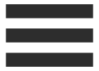

Work Experience
Net-a-Porter - Graduate Software Engineer
Graduate Software Engineering Scheme based on rotations in Software Testing, Software Development and Dev Ops. Exposing me to various technologies, including Java, Perl, Scala, Ruby, JavaScript and iOS development.
| Perl | Enhanced and maintained several core production backend applications in Perl 5 utilising PostgreSQL, DBIx and the Catalyst MVC Framework. Built a new in-house admin tool as part of a two man team using Perl, Catalyst, ActiveMQ JMS, AJAX and PostgreSQL. Source code managed using Git. Projects managed in JIRA. |
| Java 8 / Spring | Worked on various areas of the Mr.Porter web application implementing RESTful API endpoints. Integration with backend API's via POJO's, DAO's, Services and Circuit Breaker design pattern. |
| React | Lead the implementation of a React based user-generated-content and product details page Example page. |
| Responsive SASS / Styling | Worked on various areas of the Mr.Porter site furniture, adding mobile-first responsive CSS for tablet and desktop versions. Refactored javascript to updated best practises. |
| Ruby Automation | Worked with automation testers to enhance, maintain and improve a BDD Ruby Gherkin Test suite used to frequently test core applications by writing gherkin scripts and native ruby code. |
Net-a-Porter - Graduate Software Engineer
Graduate Software Engineering Scheme based on rotations in Software Testing, Software Development and Dev Ops. Exposing me to various technologies, including Java, Perl, Scala, Ruby, JavaScript and iOS development.
| Perl | Enhanced and maintained several core production backend applications in Perl 5 utilising PostgreSQL, DBIx and the Catalyst MVC Framework. |